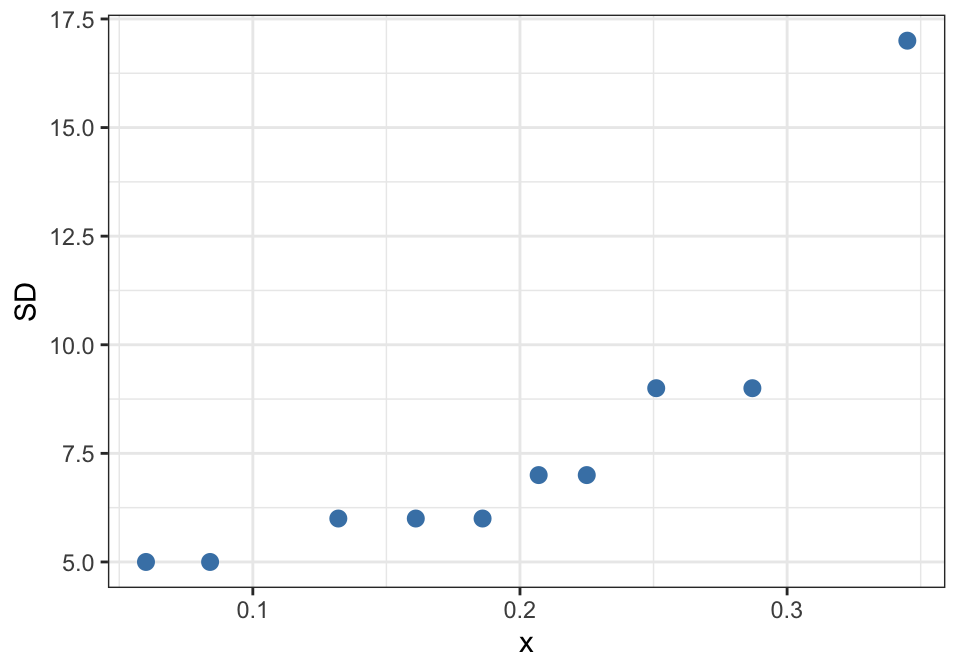
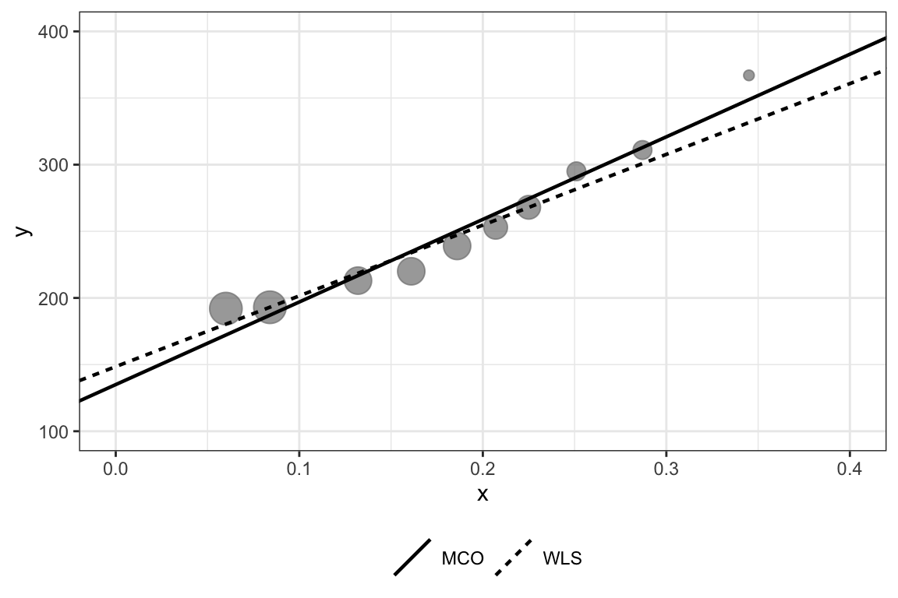

library(alr4) # carga también car
library(ggplot2)
m_69 <- lm(lifeExpF ~ group + log(ppgdp), data = UN11)
coef(m_69)(Intercept) groupother groupafrica log(ppgdp)
49.529241 -1.534683 -12.170365 3.177320 Joaquín Bächler
October 28, 2026
Seguimos con el modelo de rectas paralelas que armamos en la clase 16 con los datos UN11 de Weisberg:
\mathbb{E}(\text{lifeExpF} \mid x, \text{grupo}) = \beta_0 + \beta_{02}U_2 + \beta_{03}U_3 + \beta_1 x, \qquad x = \log(\text{ppgdp})
Es decir, cada grupo (OCDE, África, otros) tiene su propio intercepto, pero todos comparten la misma pendiente. En R:
(Intercept) groupother groupafrica log(ppgdp)
49.529241 -1.534683 -12.170365 3.177320 Ojo con el orden de los coeficientes, porque lo vamos a usar todo el rato: (Intercept), groupother, groupafrica, log(ppgdp). La OCDE es el grupo base, así que groupother y groupafrica son diferencias de intercepto respecto de la OCDE.
La pregunta de esta primera parte es: una vez que tenemos el modelo, ¿cómo testeamos cosas sobre sus coeficientes? Y no solo “¿es este \beta_j igual a cero?”, sino preguntas más interesantes como “¿África y otros tienen el mismo intercepto?” o “¿los tres grupos tienen el mismo intercepto?”.
El test de Wald está basado, para este contexto, en la distribución de nuestro estimador \hat{\beta}, de la forma: \hat{\beta} \sim N(\beta, V), \qquad \hat{V} = \hat{\sigma}^2(X'X)^{-1}
Es decir, toda la información que necesitamos está en dos objetos: el vector \hat{\beta} y la matriz \hat{V}. En R son coef() y vcov():
(Intercept) groupother groupafrica log(ppgdp)
(Intercept) 11.557 -2.660 -4.261 -1.034
groupother -2.660 1.378 1.422 0.175
groupafrica -4.261 1.422 2.426 0.330
log(ppgdp) -1.034 0.175 0.330 0.100En la diagonal de \hat{V} están las varianzas de cada \hat{\beta}_j [sus raíces son los errores estándar que salen en summary()], y fuera de la diagonal las covarianzas entre ellos. Esas covarianzas van a ser importantes en un rato.
Como hemos visto anteriormente, podemos construir un test-t de la forma t = \frac{\hat{\beta}_j - \beta_{j0}}{\sqrt{\hat{v}_{jj}}} \sim t(\text{df de }\hat{\sigma}^2)
Probemos con H_0: \beta_{\text{africa}} = 0, es decir, que África tiene el mismo intercepto que la OCDE:
groupafrica
-7.814297 Estimate Std. Error t value Pr(>|t|)
-1.217037e+01 1.557449e+00 -7.814297e+00 3.352679e-13 Nada nuevo: es exactamente el t value que nos entrega summary(). La gracia es que ahora sabemos de dónde sale.
Ahora, ¿qué pasa si queremos comparar África con otros? Ninguno de los dos es el grupo base, así que no hay un coeficiente en el summary() que nos responda directamente. Lo que sí podemos hacer es escribir la hipótesis como una combinación lineal de los coeficientes:
H_0: \beta_{\text{other}} = \beta_{\text{africa}} \iff \beta_{\text{other}} - \beta_{\text{africa}} = 0 \iff a'\beta = 0, \quad a = (0, 1, -1, 0)
Para un \hat{\ell} = a'\hat{\beta}, podemos construir un test similarmente como: t = \frac{\hat{\ell} - \ell_0}{se(\hat{\ell})} \sim t(\text{df de }\hat{\sigma}^2), \qquad se(\hat{\ell}) = \sqrt{a' \hat{V} a}
[,1]
[1,] 10.86186 [,1]
[1,] 8.514219e-22¿Por qué no basta con restar los dos errores estándar o sumarlos? Porque \text{Var}(\hat{\beta}_{\text{other}} - \hat{\beta}_{\text{africa}}) = \text{Var}(\hat{\beta}_{\text{other}}) + \text{Var}(\hat{\beta}_{\text{africa}}) - 2\,\text{Cov}(\hat{\beta}_{\text{other}}, \hat{\beta}_{\text{africa}}) y ese término de covarianza es justamente lo que a'\hat{V}a incluye automáticamente. Es lo mismo que hacíamos “a mano” para comparar medias en el capítulo 5.
Con t \approx 10.9 la evidencia es abrumadora: África y otros no tienen el mismo intercepto.
Ahora veremos el caso de una matriz L de dimensión q \times p', donde p' = \text{número de coeficientes incluyendo }\beta_0 y q es el número de restricciones que queremos testear a la vez [cada fila de L es una restricción]. Nuestro test evaluará la hipótesis nula de que L\beta = c, versus L\beta \neq c. Así se construye: F = \frac{(L\hat{\beta}-c)'(L\hat{V}L')^{-1}(L\hat{\beta}-c)}{q} \sim F(q, \text{df de }\hat{\sigma}^2)
Fijémonos en la estructura: arriba está “qué tan lejos está L\hat{\beta} de c”, pero medido en la escala de su propia varianza L\hat{V}L'. Es la versión matricial de \left(\frac{\hat{\ell} - \ell_0}{se(\hat{\ell})}\right)^2. De hecho, si q = 1, L es simplemente a' y obtenemos F = t^2.
Comprobémoslo con car::linearHypothesis(), que hace este cálculo por nosotros:
Linear hypothesis test:
groupother - groupafrica = 0
Model 1: restricted model
Model 2: lifeExpF ~ group + log(ppgdp)
Res.Df RSS Df Sum of Sq F Pr(>F)
1 196 8170.2
2 195 5090.4 1 3079.8 117.98 < 2.2e-16 ***
---
Signif. codes: 0 '***' 0.001 '**' 0.01 '*' 0.05 '.' 0.1 ' ' 1 [,1]
[1,] 117.9801F = 117.98 = 10.86^2. Mismo test, dos formas de escribirlo.
Ahora sí, un caso donde solo podemos usar F: ¿los tres grupos tienen el mismo intercepto? Eso son dos restricciones a la vez, \beta_{\text{other}} = 0 y \beta_{\text{africa}} = 0, así que q = 2: L = \begin{pmatrix} 0 & 1 & 0 & 0 \\ 0 & 0 & 1 & 0 \end{pmatrix}, \qquad c = \begin{pmatrix} 0 \\ 0 \end{pmatrix}
[,1]
[1,] 59.38264 [,1]
[1,] 7.234338e-21Y lo interesante es que este mismo número aparece por tres caminos distintos:
Linear hypothesis test:
groupother = 0
groupafrica = 0
Model 1: restricted model
Model 2: lifeExpF ~ group + log(ppgdp)
Res.Df RSS Df Sum of Sq F Pr(>F)
1 197 8190.7
2 195 5090.4 2 3100.3 59.383 < 2.2e-16 ***
---
Signif. codes: 0 '***' 0.001 '**' 0.01 '*' 0.05 '.' 0.1 ' ' 1Analysis of Variance Table
Model 1: lifeExpF ~ log(ppgdp)
Model 2: lifeExpF ~ group + log(ppgdp)
Res.Df RSS Df Sum of Sq F Pr(>F)
1 197 8190.7
2 195 5090.4 2 3100.3 59.383 < 2.2e-16 ***
---
Signif. codes: 0 '***' 0.001 '**' 0.01 '*' 0.05 '.' 0.1 ' ' 1En los tres casos F = 59.383. El tercero es el más revelador: comparar el modelo sin group contra el modelo con group [el test F por comparación de RSS que vimos en la clase 16] da exactamente lo mismo que el test de Wald.
En el modelo lineal con errores normales, los tests de Wald y de razón de verosimilitud (pruebas F por comparación de RSS) son equivalentes. Sin embargo, en otros modelos, como una regresión logística, pueden diferir.
Por último, las restricciones no tienen por qué ser del mismo “tipo”. Podemos testear a la vez que África y otros tengan el mismo intercepto y que la pendiente de \log(\text{ppgdp}) sea 3:
Linear hypothesis test:
groupother - groupafrica = 0
log(ppgdp) = 3
Model 1: restricted model
Model 2: lifeExpF ~ group + log(ppgdp)
Res.Df RSS Df Sum of Sq F Pr(>F)
1 197 9417.1
2 195 5090.4 2 4326.7 82.873 < 2.2e-16 ***
---
Signif. codes: 0 '***' 0.001 '**' 0.01 '*' 0.05 '.' 0.1 ' ' 1En resumen: cualquier hipótesis lineal sobre \beta se escribe como L\beta = c. Con q = 1 es un t (o F = t^2), con q > 1 solo hay F.
Hasta ahora hemos rechazado hipótesis con valores-p minúsculos, del orden de 10^{-21}. Pero vale la pena detenerse y preguntarse: cuando un test rechaza, ¿qué tan probable es que el efecto sea real?
La intuición dice “si \alpha = 0.05, me equivoco el 5% de las veces”. Pero eso responde otra pregunta. Veámoslo con un ejemplo.
En un curso hay 2.000 informes: 100 fueron hechos con IA y 1.900 son honestos. El profesor no lo sabe. Un detector revisa cada informe y lo acusa o no. Para cada informe:
Contemos:
| Acusa | No acusa | Total | |
|---|---|---|---|
| Usó IA | 80 | 20 | 100 |
| Honesto | 95 | 1.805 | 1.900 |
| Total | 175 | 1.825 | 2.000 |
Ahora, el detector acusó a un alumno. ¿Qué probabilidad hay de que haya usado IA? No es 95%. De los 175 acusados, solo 80 usaron IA: \Pr(\text{IA} \mid \text{acusado}) = \frac{80}{175} = 0.46
Más de la mitad de los acusados son inocentes. El 5% es la fracción de honestos que resultan acusados; la fracción de acusados que son inocentes es otra cosa completamente distinta.
Si generalizamos la tabla, sea f la fracción de tests donde rechazar la H_0 es lo correcto [en el ejemplo, f = 100/2.000 = 0.05]. Entonces (Ioannidis, 2005): \Pr(\text{descubrimiento verdadero} \mid \text{descubrimiento}) = \frac{f\gamma}{f\gamma + (1-f)\alpha}
Es Bayes puro: arriba están los rechazos correctos (f\gamma) y abajo todos los rechazos, correctos más falsos ((1-f)\alpha). Juega con los parámetros:
\Pr(\text{verdadero} \mid \text{rechazo}) = ${ppv.toFixed(3)}`
curva = d3.range(-4, Math.log10(0.5) + 0.001, 0.02).map(e => {
const ff = 10 ** e
return {f: ff, ppv: ff * gamma / (ff * gamma + (1 - ff) * alpha)}
})
Plot.plot({
x: {type: "log", label: "f (fracción con efecto real)"},
y: {domain: [0, 1], label: "Pr(verdadero | rechazo)", grid: true},
marks: [
Plot.line(curva, {x: "f", y: "ppv", stroke: "steelblue", strokeWidth: 2}),
Plot.dot([{f, ppv}], {x: "f", y: "ppv", fill: "firebrick", r: 5}),
Plot.ruleY([0.5], {strokeDasharray: "4,4", stroke: "gray"})
]
})Algunas cosas para probar:
La moraleja: rechazar vale cuando la hipótesis tenía sentido antes de ver los datos.
Esto se conecta directamente con el problema del testeo múltiple. Si hacemos 100 tests independientes al 5% y todas las H_0 son verdaderas, esperamos $$5 “significativos” igual. Simulémoslo:
[1] 4Obtuvimos 4 “descubrimientos” sin que haya ningún efecto real. Las soluciones pasan por ajustar los valores-p, ya sea controlando el error por familia (Bonferroni, Tukey, del capítulo 5) o la tasa de descubrimientos falsos (Benjamini y Hochberg, 1995):
Ambas correcciones eliminan los falsos positivos.
UN11 cubren más del 99% de la población mundial: son una población, no una muestra. Los valores-p ahí se interpretan como “niveles de significancia reportados” (Freedman y Lane, 1983).group de UN11 se definió mirando los datos [África se veía distinto], así que un test que compare los grupos casi con certeza saldrá significativo. Nuestro F = 59.4 de arriba no debería sorprender a nadie.Cambiamos de capítulo (Weisberg, cap. 7: Varianzas). Todo lo que hicimos arriba descansa en un supuesto que hemos dado por sentado: la varianza constante, \text{Var}(Y \mid X) = \sigma^2
Pero en muchos casos la variabilidad de los errores depende de los valores de X. Cuando los errores no son homocedásticos, MCO sigue siendo insesgado, pero pierde eficiencia y sus errores estándar dejan de ser correctos. Y si los errores estándar están mal, \hat{V} está mal, y todos los tests de Wald que acabamos de construir también.
La idea es permitir que cada observación tenga su propia varianza: \begin{aligned} \mathbb{E}(Y \mid X = x_i) &= x_i'\beta \\ \text{Var}(Y \mid X = x_i) &= \sigma^2 / w_i, \qquad w_i > 0 \end{aligned}
donde los pesos w_i son conocidos (o estimados) y positivos. Notemos que si w_i = 1 para todo i, volvemos a MCO.
La lógica de los pesos es intuitiva:
En lugar de minimizar la suma de cuadrados usual, minimizamos una suma ponderada: RSS(\beta) = \sum_i w_i (y_i - x_i'\beta)^2
Así, los residuos de las observaciones con mayor peso “cuestan” más, y el ajuste se acomoda a ellas. La solución matricial es: \hat{\beta}_{WLS} = (X'WX)^{-1}X'WY
donde W es la matriz diagonal con los pesos w_i. Sus propiedades:
Si multiplicamos toda la ecuación por \sqrt{w_i}: \sqrt{w_i}\,y_i = \sqrt{w_i}\,x_i'\beta + \sqrt{w_i}\,e_i, \qquad \text{Var}(\sqrt{w_i}\,e_i) = w_i \cdot \frac{\sigma^2}{w_i} = \sigma^2 el error transformado sí tiene varianza constante. O sea, WLS no es más que MCO sobre los datos reescalados por \sqrt{w_i}. Por eso todo lo que sabemos de MCO [tests t, F, Wald] sigue funcionando.
Datos de física de altas energías (Tabla 7.1 del libro). Cada y_i es un conteo (sección eficaz, en mb) medido a un nivel de energía x = s^{-1/2}, y cada medición viene con su desviación estándar SD_i conocida. Como \text{Var}(y_i) = SD_i^2, el peso natural es w_i = 1/SD_i^2.
Primero miremos si de verdad la varianza cambia con x:

Claramente sí: las mediciones con x grande son mucho menos precisas. La de x = 0.345 tiene SD = 17, más de tres veces la de x = 0.06. MCO las trataría a todas por igual.
Ajustemos ambos modelos. En R, WLS es simplemente agregar el argumento weights:
MCO WLS
(Intercept) 134.9998 148.4732
x 619.7123 530.8354
Call:
lm(formula = y ~ x, data = d)
Residuals:
Min 1Q Median 3Q Max
-14.773 -9.319 -2.829 5.571 19.817
Coefficients:
Estimate Std. Error t value Pr(>|t|)
(Intercept) 135.00 10.08 13.4 9.21e-07 ***
x 619.71 47.68 13.0 1.16e-06 ***
---
Signif. codes: 0 '***' 0.001 '**' 0.01 '*' 0.05 '.' 0.1 ' ' 1
Residual standard error: 12.69 on 8 degrees of freedom
Multiple R-squared: 0.9548, Adjusted R-squared: 0.9491
F-statistic: 168.9 on 1 and 8 DF, p-value: 1.165e-06
Call:
lm(formula = y ~ x, data = d, weights = w)
Weighted Residuals:
Min 1Q Median 3Q Max
-2.3230 -0.8842 0.0000 1.3900 2.3353
Coefficients:
Estimate Std. Error t value Pr(>|t|)
(Intercept) 148.473 8.079 18.38 7.91e-08 ***
x 530.835 47.550 11.16 3.71e-06 ***
---
Signif. codes: 0 '***' 0.001 '**' 0.01 '*' 0.05 '.' 0.1 ' ' 1
Residual standard error: 1.657 on 8 degrees of freedom
Multiple R-squared: 0.9397, Adjusted R-squared: 0.9321
F-statistic: 124.6 on 1 and 8 DF, p-value: 3.71e-06Y para convencernos de que lm no hace magia, calculemos \hat{\beta}_{WLS} = (X'WX)^{-1}X'WY a mano:
[,1]
[1,] 148.4732
[2,] 530.8354Y también por el camino de “MCO disfrazado”, reescalando por \sqrt{w_i} [el 0 + es porque el intercepto ahora es la columna \sqrt{w_i}, no una columna de unos]:
sqrt(w) I(sqrt(w) * x)
148.4732 530.8354 Tres caminos, mismo resultado. Veamos el ajuste:

La recta WLS se acomoda a los puntos grandes [los más precisos, a la izquierda] y “se despreocupa” del punto de x = 0.345, que tiene apenas un 1.5% del peso total. Con MCO, ese mismo punto pesa lo mismo que cualquier otro (10%) y tira la pendiente hacia arriba: 619.7 vs 530.8.
El ejemplo anterior era “fácil” porque nos regalaban las SD_i. Pero hay una situación muy común en la que los pesos salen solos: cuando cada observación es un promedio.
Los datos Rateprof (paquete alr4) tienen evaluaciones de profesores en RateMyProfessors.com. Las variables que nos interesan:
quality: calificación promedio de calidad (1–5).easiness: calificación promedio de facilidad del curso.raterInterest: interés promedio del estudiante.numRaters: número de estudiantes que evaluaron al profesor.Lo importante es que cada fila no es una evaluación, sino el promedio de las n_i evaluaciones del profesor i. Si a nivel individual el modelo es \mathbb{E}(y_{ij} \mid X_{ij}) = \beta_0 + \beta_1 x_{1ij} + \beta_2 x_{2ij}, \qquad \text{Var}(y_{ij} \mid X_{ij}) = \sigma^2 donde y_{ij} es la calificación del estudiante j al profesor i, entonces para el promedio \bar{y}_i: \mathbb{E}(\bar{y}_i \mid X_i) = \beta_0 + \beta_1 \bar{x}_{1i} + \beta_2 \bar{x}_{2i}, \qquad \text{Var}(\bar{y}_i \mid X_i) = \frac{\sigma^2}{n_i}
Los coeficientes son los mismos, pero la varianza del promedio es \sigma^2/n_i: es exactamente la forma \sigma^2/w_i, con w_i = n_i = numRaters. Un profesor evaluado por 86 estudiantes tiene un promedio mucho más confiable que uno evaluado por 10.
Min. 1st Qu. Median Mean 3rd Qu. Max.
10.00 15.00 24.00 28.58 37.00 86.00 MCO WLS
(Intercept) 0.06614013 -0.1038398
easiness 0.52671754 0.5195237
raterInterest 0.56125107 0.6226929
Call:
lm(formula = quality ~ easiness + raterInterest, data = Rateprof)
Residuals:
Min 1Q Median 3Q Max
-1.89212 -0.44561 0.02212 0.44789 1.53675
Coefficients:
Estimate Std. Error t value Pr(>|t|)
(Intercept) 0.06614 0.21872 0.302 0.763
easiness 0.52672 0.04280 12.306 <2e-16 ***
raterInterest 0.56125 0.06024 9.316 <2e-16 ***
---
Signif. codes: 0 '***' 0.001 '**' 0.01 '*' 0.05 '.' 0.1 ' ' 1
Residual standard error: 0.6224 on 363 degrees of freedom
Multiple R-squared: 0.4507, Adjusted R-squared: 0.4477
F-statistic: 148.9 on 2 and 363 DF, p-value: < 2.2e-16
Call:
lm(formula = quality ~ easiness + raterInterest, data = Rateprof,
weights = numRaters)
Weighted Residuals:
Min 1Q Median 3Q Max
-10.7158 -2.2589 0.1496 2.1725 10.4313
Coefficients:
Estimate Std. Error t value Pr(>|t|)
(Intercept) -0.10384 0.22833 -0.455 0.65
easiness 0.51952 0.04366 11.898 <2e-16 ***
raterInterest 0.62269 0.06383 9.756 <2e-16 ***
---
Signif. codes: 0 '***' 0.001 '**' 0.01 '*' 0.05 '.' 0.1 ' ' 1
Residual standard error: 3.352 on 363 degrees of freedom
Multiple R-squared: 0.4445, Adjusted R-squared: 0.4415
F-statistic: 145.3 on 2 and 363 DF, p-value: < 2.2e-16Acá los cambios son más moderados que en Strong Interaction [el efecto de raterInterest sube de 0.56 a 0.62], pero la interpretación es la misma: los profesores con más evaluaciones (promedios más precisos) pesan más en el ajuste.
Un detalle de la salida: el Residual standard error de WLS (3.35) no es comparable con el de MCO (0.62). En WLS, \hat{\sigma} estima el \sigma de una evaluación individual, no el de un promedio. Lo mismo pasa con los Weighted Residuals, que son \sqrt{w_i}\,\hat{e}_i.
| Problema | Herramienta |
|---|---|
| Testear un coeficiente | Test t con \sqrt{\hat{v}_{jj}} |
| Testear una combinación lineal de coeficientes | Test t con se(\hat{\ell}) = \sqrt{a'\hat{V}a} |
| Testear varias restricciones a la vez | Test F de Wald con L\beta = c (car::linearHypothesis) |
| Interpretar un rechazo | Pensar en f, \gamma y \alpha; corregir por testeo múltiple |
| Varianza no constante con pesos conocidos | WLS (lm(..., weights = w)) |
| Observaciones que son promedios de n_i datos | WLS con w_i = n_i |